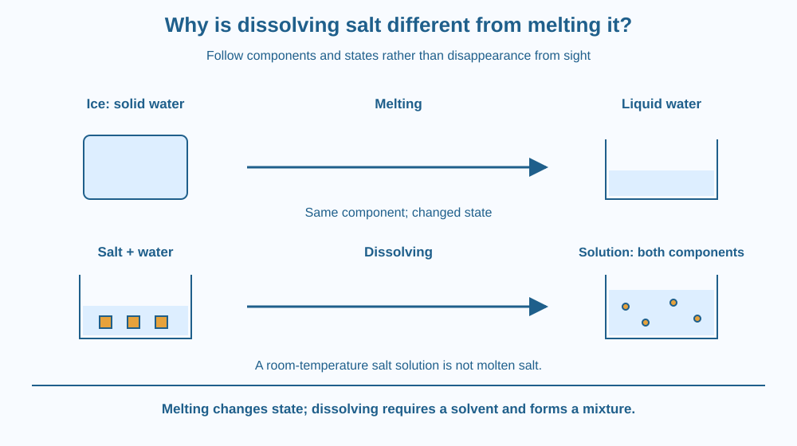

Distinguish dissolving from melting using what is present before and after each process. Identify the solvent in dissolution and the solid-to-liquid state change in melting. Explain why disappearance from sight is not enough to decide which process happened.
A grain of salt disappears into water. An ice cube disappears into liquid water. Both solids become hard to see, but the processes are not identical.
The salt ends up as part of a mixture containing a solvent. The ice changes state while remaining water. To distinguish them, follow the identity of the materials and ask whether another substance is required as a solvent.
A clear final liquid is a weak clue by itself. It can conceal a dissolved solute or simply be the melted form of the original solid.
Melting, also called fusion, is a change from the solid state to the liquid state. A piece of pure ice melts into liquid water. The chemical identity remains water, while the organisation and movement within the material change.
Melting involves energy transfer under appropriate conditions. The energy helps change the state rather than requiring every added amount to raise temperature immediately. This lesson does not repeat the earlier particle-motion account; the key point is that the solid itself becomes its liquid form.
Dissolving involves a substance becoming dispersed in a solvent to form a solution. When table salt dissolves in water, the final mixture contains both salt and water. Water has not become liquid salt, and the salt has not simply melted at room temperature.
A useful test is to list the components. For melting pure ice, the before-and-after list is water in different states. For salt dissolution, the list includes salt and water before mixing and the same components distributed through the resulting solution.
The solvent is not merely an optional label. It is part of what makes dissolution a different process. A salt grain placed in an empty room-temperature cup does not undergo the same disappearance just because the cup has been stirred with a spoon.
A substance can have both a melting point and a solubility behaviour, but they describe different conditions. Salt's melting requires temperatures far beyond an ordinary glass of water. Dissolution in room-temperature water is therefore not evidence that its melting point has been reached.
Warming can speed dissolution and can change solubility, depending on the substance. That does not turn dissolving into melting. A temperature change can influence several processes without making them equivalent.
Solutions also differ from suspensions. If visible grains remain floating or settling, some solid may still be undissolved. The earlier saturation lesson explains why leftover material can have more than one cause. Here we only use that observation to avoid calling every wet grain part of a uniform solution.
Use two parallel picture sequences. In the first, draw water symbols packed into an ice shape, then the same symbols as a liquid. Label this state change.
In the second, draw separate salt and water symbols before mixing, then both distributed through one region. Label the water solvent and the salt solute. The symbols track components rather than pretending to show an exact microscopic photograph.
Circle the extra component in the dissolving sequence. That comparison helps prevent the vague phrase “the solid became liquid” from hiding two very different outcomes. In a solution, a dissolved substance need not be a separate liquid phase at all.
The SVG has two rows. The upper row shows ice becoming liquid water with the same component symbol throughout. The lower row shows salt added to water and the two components present in a final solution.
A label identifies the solvent only in the dissolution example. Another states that a room-temperature salt solution is not molten salt. Arrows represent the processes without showing heating equipment or suggesting a kitchen activity involving high temperatures.
The diagram's symbols are intentionally simple. Their purpose is bookkeeping of substances and states, not a repeated lesson on crystal growth or the detailed arrangement inside a salt lattice.

Adding salt to nimbu pani involves dissolution. An ice cube in the same drink can melt. Both can occur in one glass, but one process mixes components and the other changes the state of water.
A recipe may use “melt” casually for several kinds of disappearance. Scientific language is more precise because the mechanism affects what remains and what conditions are required. A solution's ingredients can matter even when no grains are visible.
Chocolate is a complex mixture and can show several changes when warmed or mixed. It is less suitable than pure ice for introducing a clean state-change comparison, so this lesson uses simpler examples before returning to complicated foods.
Use two small bowls, room-temperature water, a little table salt and an ice cube. Ask an adult before using kitchen materials. Do not taste the experiment, and no heating is needed.
The ice may not finish melting during the activity. Record partial change rather than waiting for a required ending. The bowl with ice contains pre-existing liquid water as well as melting ice, so use the component list carefully rather than pretending the whole bowl began as one pure solid.
Suppose someone says the salt must have melted because it can no longer be seen. What extra information would you ask for? Consider temperature, the presence of a solvent and the components of the final mixture.
Now imagine a solid that does not dissolve readily in water. Does that observation alone tell you its melting point? Explain why one property cannot be inferred directly from the other.
What is melting?
Answer: C — Melting is a state change from solid to liquid.
Why is salt dissolving in water not simply salt melting?
Answer: B — The solution contains water and dispersed salt rather than a separate molten salt phase.
Salt is no longer visible after stirring into water. What follows?
Answer: A — Solvent, temperature and components must be considered before identifying the process.
Write a two-column guide headed “Changed state” and “Mixed into a solvent.” Put pure ice melting in one column and salt dissolving in water in the other. List the components before and after each.
Finish with a correction to this sentence: “Any solid that disappears into a clear liquid has melted.” Your explanation should remain valid even if both changes happen in the same drink at the same time.
Two processes can share the same visible clue, a solid becoming difficult to see, while having different explanations. Following the substances is more reliable than following appearance alone. This is a small example of why scientists use precise operational questions instead of naming a process from one visual impression.
Melting changes a solid into its liquid state; dissolving disperses a solute in a solvent, producing a mixture rather than necessarily a molten substance.